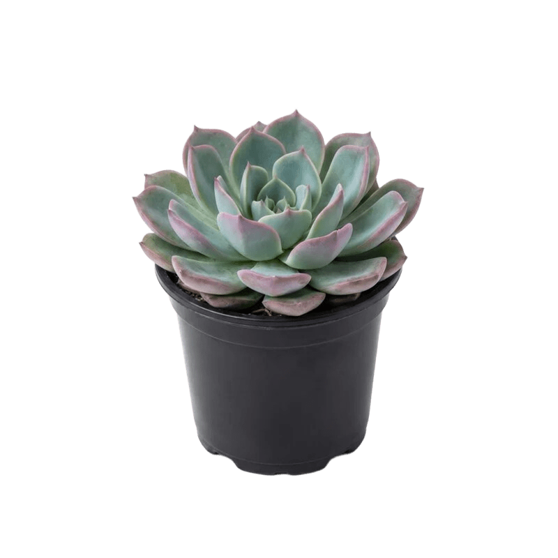

Echeverias need the brightest spot in the house, ideally a few hours of direct sun in a south- or west-facing window. Without enough light, the rosette will "stretch," growing pale and leggy as it reaches for a light source, which can't be reversed.
Use the soak-and-dry method: water thoroughly until it drains out the bottom, then let the soil dry out completely before watering again, usually every 2–3 weeks, less in winter. Try not to get water on the rosette itself, just the soil.
Prefers low humidity and good airflow over a humid environment. Normal room temperature is fine, but don't let it sit in damp air or a closed, muggy spot.
Feeding needs are minimal and not required. If you want, a diluted cactus or succulent fertilizer once or twice during the growing season (spring and summer) is enough. Skip it the rest of the year.